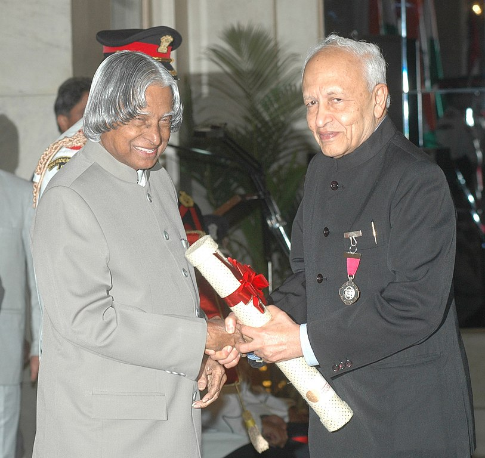
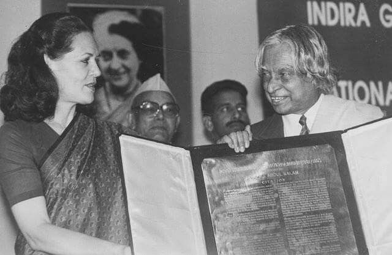
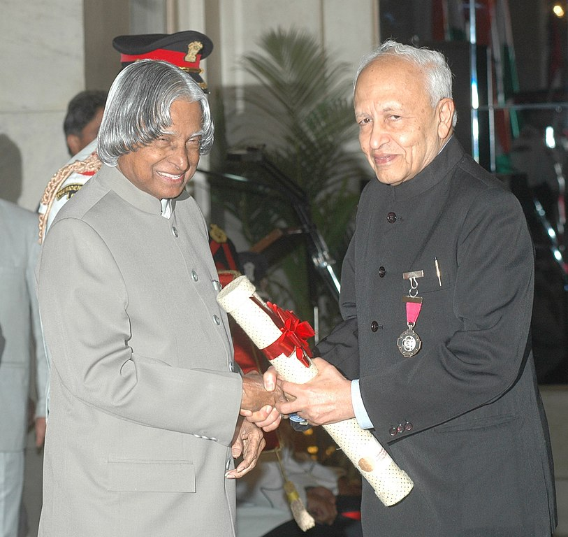
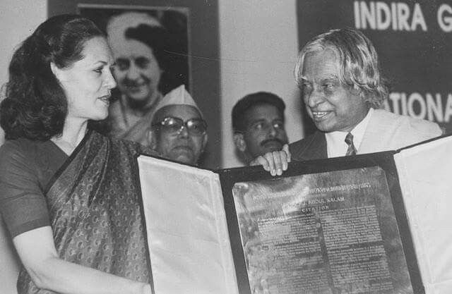

"All Birds find shelter during rain.
But Eagle avoids rain by flying above clouds."
- Dr. A.P.J. Abdul Kalam
Avul Pakir Jainulabdeen Abdul Kalam 15 October 1931 – 27 July 2015) was an Indian aerospace scientist and statesman who served as the 11th president of India from 2002 to 2007. He was born and raised in Rameswaram, Tamil Nadu and studied physics and aerospace engineering. He spent the next four decades as a scientist and science administrator, mainly at the Defence Research and Development Organisation (DRDO) and Indian Space Research Organisation (ISRO) and was intimately involved in India's civilian space programme and military missile development efforts. He thus came to be known as the Missile Man of India for his work on the development of ballistic missile and launch vehicle technology. He also played a pivotal organisational, technical, and political role in India's Pokhran-II nuclear tests in 1998, the first since the original nuclear test by India in 1974.
Kalam was elected as the 11th president of India in 2002 with the support of both the ruling Bharatiya Janata Party and the then-opposition Indian National Congress. Widely referred to as the "People's President" , he returned to his civilian life of education, writing and public service after a single term. He was a recipient of several prestigious awards, including the Bharat Ratna, India's highest civilian honour.
While delivering a lecture at the Indian Institute of Management Shillong, Kalam collapsed and died from an apparent cardiac arrest on 27 July 2015, aged 83. Thousands, including national-level dignitaries, attended the funeral ceremony held in his hometown of Rameswaram, where he was buried with full state honours.

Avul Pakir Jainulabdeen Abdul Kalam was born on 15 October 1931, to a Tamil Muslim family in the pilgrimage centre of Rameswaram on Pamban Island, then in the Madras Presidency and now in the State of Tamil Nadu. His father Jainulabdeen Marakayar was a boat owner and imam of a local mosque; his mother Ashiamma was a housewife. His father owned a ferry that took Hindu pilgrims back and forth between Rameswaram and the now uninhabited Dhanushkodi.Kalam was the youngest of four brothers and one sister in his family. His ancestors had been wealthy Marakayar traders and landowners, with numerous properties and large tracts of land. Marakayar are a Muslim ethnic group found in coastal Tamil Nadu and Sri Lanka who claim descent from Arab traders and local women. The family business had involved trading groceries between the mainland and the island and to and from Sri Lanka, as well as ferrying pilgrims between the mainland and Pamban. With the opening of the Pamban Bridge to the mainland in 1914, however, the businesses failed and the family fortune and properties were lost by the 1920s, apart from the ancestral home. The family was poverty-stricken by the time Kalam was born. As a young boy he had to sell newspapers to add to the family's meager income.
In his school years, Kalam had average grades but was described as a bright and hardworking student who had a strong desire to learn. He spent hours on his studies, especially mathematics. After completing his education at the Schwartz Higher Secondary School, Ramanathapuram, Kalam went on to attend Saint Joseph's College, Tiruchirappalli, then affiliated with the University of Madras, from where he graduated in physics in 1954. He moved to Madras in 1955 to study aerospace engineering in Madras Institute of Technology. While Kalam was working on a senior class project, the Dean was dissatisfied with his lack of progress and threatened to revoke his scholarship unless the project was finished within the next three days. Kalam met the deadline, impressing the Dean, who later said to him, "I was putting you under stress and asking you to meet a difficult deadline." He narrowly missed achieving his dream of becoming a fighter pilot, as he placed ninth in qualifiers, and only eight positions were available in the IAF.
After graduating from the Madras Institute of Technology in 1960, Kalam joined the Aeronautical Development Establishment of the Defence Research and Development Organisation (by Press Information Bureau, Government of India) as a scientist after becoming a member of the Defence Research & Development Service (DRDS). He started his career by designing a small hovercraft, but remained unconvinced by his choice of a job at DRDO. Kalam joined the INCOSPAR, working under Vikram Sarabhai, the renowned space scientist. He was interviewed and recruited into ISRO by H. G. S. Murthy, the first Director of Thumba Equatorial Rocket Launching Station (TERLS). In 1969, Kalam was transferred to the Indian Space Research Organisation (ISRO) where he was the project director of India's first Satellite Launch Vehicle (SLV-III) which successfully deployed the Rohini satellite in near-earth orbit in July 1980; Kalam had first started work on an expandable rocket project independently at DRDO in 1965. In 1969, Kalam received the government's approval and expanded the programme to include more engineers.
In 1963 to 1964, he visited NASA's Langley Research Center in Hampton, Virginia; Goddard Space Flight Center in Greenbelt, Maryland; and Wallops Flight Facility. Between the 1970s and 1990s, Kalam made an effort to develop the Polar Satellite Launch Vehicle (PSLV) and SLV-III projects, both of which proved to be successful.
He also conceptualised and spearheaded the development of the Tata Nano car, which helped put cars at a price-point within reach of the average Indian consumer. Tata Motors has sinced rolled out the first batch of Tigor Electric Vehicles from its Sanand Plant in Gujarat, which Tata has described as "fast-forward[ing] India's electric dream."
Kalam was invited by Raja Ramanna to witness the country's first nuclear test Smiling Buddha as the representative of TBRL, even though he had not participated in its development. In the 1970s, Kalam also directed two projects, Project Devil and Project Valiant, which sought to develop ballistic missiles from the technology of the successful SLV programme. Despite the disapproval of the Union Cabinet, Prime Minister Indira Gandhi allotted secret funds for these aerospace projects through her discretionary powers under Kalam's directorship. Kalam played an integral role convincing the Union Cabinet to conceal the true nature of these classified aerospace projects. His research and educational leadership brought him great laurels and prestige in the 1980s, which prompted the government to initiate an advanced missile programme under his directorship.
Kalam and Dr V S Arunachalam, metallurgist and scientific adviser to the Defence Minister, worked on the suggestion by the then Defence Minister, R. Venkataraman on a proposal for simultaneous development of a quiver of missiles instead of taking planned missiles one after another. R Venkatraman was instrumental in getting the cabinet approval for allocating ₹ 3.88 billion for the mission, named Integrated Guided Missile Development Programme (IGMDP) and appointed Kalam as the chief executive. Kalam played a major part in developing many missiles under the mission including Agni, an intermediate range ballistic missile and Prithvi, the tactical surface-to-surface missile, although the projects have been criticised for mismanagement and cost and time overruns.
Kalam served as the Chief Scientific Adviser to the Prime Minister and Secretary of the Defence Research and Development Organisation from July 1992 to December 1999. The Pokhran-II nuclear tests were conducted during this period in which he played an intensive political and technological role. Kalam served as the Chief Project Coordinator, along with Rajagopala Chidambaram, during the testing phase. Media coverage of Kalam during this period made him the country's best known nuclear scientist. However, the director of the site test, K Santhanam, said that the thermonuclear bomb had been a "fizzle" and criticised Kalam for issuing an incorrect report. Both Kalam and Chidambaram dismissed the claims.
In 1998, along with cardiologist Soma Raju, Kalam developed a low cost coronary stent, named the "Kalam-Raju Stent". In 2012, the duo designed a rugged tablet computer for health care in rural areas, which was named the "Kalam-Raju Tablet".

Kalam served as the 11th president of India, succeeding K. R. Narayanan. He won the 2002 presidential election with an electoral vote of 922,884, surpassing the 107,366 votes won by Lakshmi Sahgal. His term lasted from 25 July 2002, to 25 July 2007.
On 10 June 2002, the National Democratic Alliance (NDA) which was in power at the time, expressed that they would nominate Kalam for the post of President, and both the Samajwadi Party and the Nationalist Congress Party backed his candidacy. After the Samajwadi Party announced its support for Kalam, Narayanan chose not to seek a second term in office, leaving the field clear. Kalam said of the announcement of his candidature:
"I am really overwhelmed. Everywhere both in Internet and in other media, I have been asked for a message. I was thinking what message I can give to the people of the country at this juncture."
The polling for the presidential election began on 15 July 2002, in Parliament and the state assemblies, with the media claiming that the election was a one-sided affair and Kalam's victory was a foregone conclusion; the count was held on 18 July. Kalam became the 11th president of the Republic of India in an easy victory, and moved into the Rashtrapati Bhavan after he was sworn in on 25 July. Kalam was the third President of India to have been honoured with a Bharat Ratna, India's highest civilian honour, before becoming the President Sarvepalli Radhakrishnan (1954) and Zakir Hussain (1963) were the earlier recipients of Bharat Ratna who later became the President of India. He was also the first scientist and the first bachelor to occupy Rashtrapati Bhawan
During his term as president, he was affectionately known as the People's President, saying that signing the Office of Profit Bill was the toughest decision he had taken during his tenure. Kalam was criticised for his inaction in deciding the fate of 20 out of the 21 mercy petitions submitted to him during his tenure. Article 72 of the Constitution of India empowers the President of India to grant pardons, and suspend or commute the death sentence of convicts on death row. Kalam acted on only one mercy plea in his five-year tenure as president, rejecting the plea of rapist Dhananjoy Chatterjee, who was later hanged. Perhaps the most notable plea was from Afzal Guru, a Kashmiri terrorist who was convicted of conspiracy in the December 2001 attack on the Indian Parliament and was sentenced to death by the Supreme Court of India in 2004. While the sentence was scheduled to be carried out on 20 October 2006, the pending action on his mercy plea resulted in him remaining on death row. He also took the controversial decision to impose President's Rule in Bihar in 2005.
In September 2003, in an interactive session in PGI Chandigarh, Kalam supported the need of Uniform Civil Code in India, keeping in view the population of the country.
At the end of his term, on 20 June 2007, Kalam expressed his willingness to consider a second term in office provided there was certainty about his victory in the 2007 presidential election. However, two days later, he decided not to contest the Presidential election again stating that he wanted to avoid involving Rashtrapati Bhavan from any political processes. He was proposed by third front named United National Progressive Alliance leader J. Jayalalithaa and coordinator Chandrababu Naidu other leaders Mulayam Singh Yadav and Om Prakash Chautala, but he did not have the support of the left parties, Shiv Sena and UPA constituents, to receive a renewed mandate.
Nearing the expiry of the term of the 12th President Pratibha Patil on 24 July 2012, media reports in April claimed that Kalam was likely to be nominated for his second term. After the reports, social networking sites witnessed a number of people supporting his candidature. The BJP potentially backed his nomination[failed verification], saying that the party would lend their support if the Trinamool Congress, Samajwadi Party and Indian National Congress proposed him for the 2012 presidential election. A month ahead of the election, Mulayam Singh Yadav and Mamata Banerjee also expressed their support for Kalam. Days afterwards, Mulayam Singh Yadav backed out, leaving Mamata Banerjee as the solitary supporter. On 18 June 2012, Kalam declined to contest the 2012 presidential poll. He said of his decision not to do so:
"Many, many citizens have also expressed the same wish. It only reflects their love and affection for me and the aspiration of the people. I am really overwhelmed by this support. This being their wish, I respect it. I want to thank them for the trust they have in me."
On 27 July 2015, Kalam travelled to Shillong to deliver a lecture on "Creating a Livable Planet Earth" at the Indian Institute of Management Shillong. While climbing a flight of stairs, he experienced some discomfort, but was able to enter the auditorium after a brief rest. At around 6:35 p.m. IST, only five minutes into his lecture, he collapsed. He was rushed to the nearby Bethany Hospital in a critical condition; upon arrival, he lacked a pulse or any other signs of life. Despite being placed in the intensive care unit, Kalam was confirmed dead of a sudden cardiac arrest at 7:45 p.m. IST. His last words, to his aide Srijan Pal Singh, were reportedly: "Funny guy! Are you doing well?"
Following his death, Kalam's body was airlifted in an Indian Air Force helicopter from Shillong to Guwahati, from where it was flown to New Delhi on the morning of 28 July in an air force C-130J Hercules. The flight landed at Palam Air Base that afternoon and was received by the President, the vice-president, the Prime Minister, Chief Minister of Delhi Arvind Kejriwal, and the three service chiefs of the Indian Armed Forces, who laid wreaths on Kalam's body. His body was then placed on a gun carriage draped with the Indian flag and taken to his Delhi residence at 10 Rajaji Marg; there, the public and numerous dignitaries paid homage, including former prime minister Manmohan Singh, Congress President Sonia Gandhi and Vice-president Rahul Gandhi, and Uttar Pradesh Chief Minister Akhilesh Yadav.
On the morning of 29 July, Kalam's body, wrapped in the Indian flag, was taken to Palam Air Base and flown to Madurai in an air force C-130J aircraft, arriving at Madurai Airport that afternoon. His body was received at the airport by the three service chiefs and national and state dignitaries, including cabinet ministers Manohar Parrikar, Venkaiah Naidu, Pon Radhakrishnan and the governors of Tamil Nadu and Meghalaya, K Rosaiah and V. Shanmuganathan. After a brief ceremony, Kalam's body was flown by air force helicopter to the town of Mandapam, from where it was taken in an army truck to his hometown of Rameswaram. Upon arriving at Rameswaram, his body was displayed in an open area in front of the local bus station to allow the public to pay their final respects until 8 p.m. that evening.
On 30 July 2015, the former president was laid to rest at Rameswaram's Pei Karumbu Ground with full state honours. Over 350,000 people attended the last rites, including the Prime Minister, the governor of Tamil Nadu and the chief ministers of Karnataka, Kerala and Andhra Pradesh.
 


